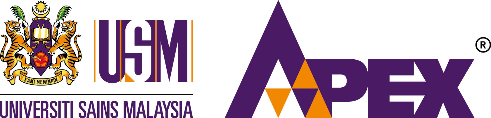

Skip to learning content

UNIVERSITI SAINS MALAYSIA
FORENSIC MICROSCOPY: CASE FILES
● Anonymous learning
☀ Light mode
Reset this browser’s progress?
This removes activity results, notes and assessment answers saved by this lab.
Keep progress
Reset progress